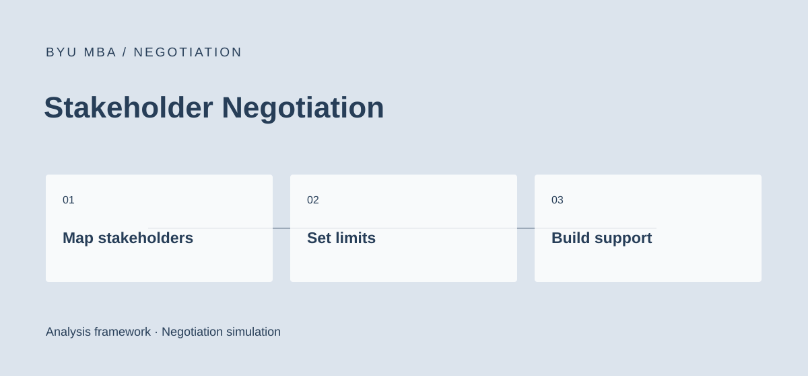

Negotiation simulation · 2026
Stakeholder Negotiation: harborCo
A classroom negotiation involving several stakeholders with different priorities. I represented the Environmental League and evaluated whether a proposed agreement sufficiently protected the interests of that group.
- My role
- Environmental League representative
- Year
- 2026
- Work type
- Negotiation simulation
- Focus
- Stakeholder analysis · BATNA · Approval leverage

My contribution
I identified my environmental priorities and considered my alternative to an agreement, or BATNA. That preparation helped me communicate limits and assess whether supporting a proposal made sense.
Analysis
The negotiation required attention to who could approve the agreement and which interests could be traded. Once my priorities were addressed, I maintained a position in which my support still mattered to the final agreement.
Analysis summary
| Consideration | Question | Application |
|---|---|---|
| Priorities | Which protections are essential? | Set clear limits |
| Alternative | What if there is no agreement? | Evaluate the pressure to accept |
| Approval | Whose support is required? | Understand negotiating leverage |
| Coalitions | Who shares part of the objective? | Identify allies early |
Framework summarized from my preparation, analysis, and reflection.
Outcome and feedback
Peer feedback described my limits as clear and my use of approval power as strategic. It also identified an improvement: building a coalition earlier could have reduced the risk of being isolated by other participants.
What I learned
Independence can preserve flexibility, but it also creates risk. I would map potential allies earlier and distinguish between issues where I need a firm limit and issues where a trade can help several parties.